DDG · Бюро · альбом
Сайт-бюро, где главная страница — не видео и не картинка, а живой трёхмерный мир, который считается прямо в браузере зрителя: солнце, вода, растения, птицы, плёнка. Внутри того же сайта живёт редактор этой сцены, а рядом — белая лаборатория, где каждый объект проверяется до того, как попадёт в кадр. Этот альбом — опись того, что здесь получилось редкого, и заготовка программы, по которой это можно рассказывать.
01 · Сцена
Обычный «3D на сайте» — это либо крутящаяся модель товара, либо заранее отрендеренное видео. Здесь другое: пейзаж считается заново каждый кадр, камеры сменяют друг друга, как планы в фильме, и композиция каждого плана — авторская.
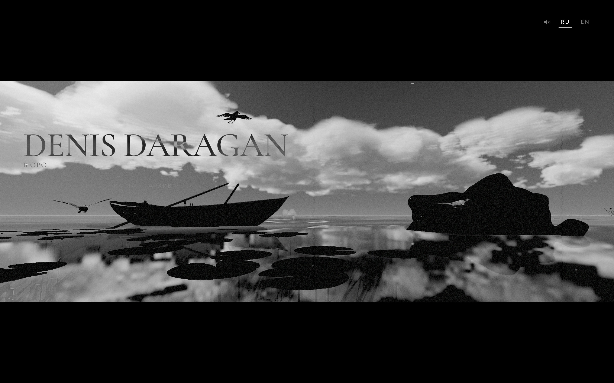
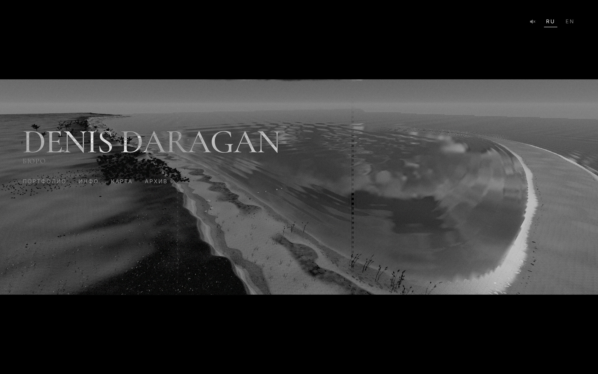
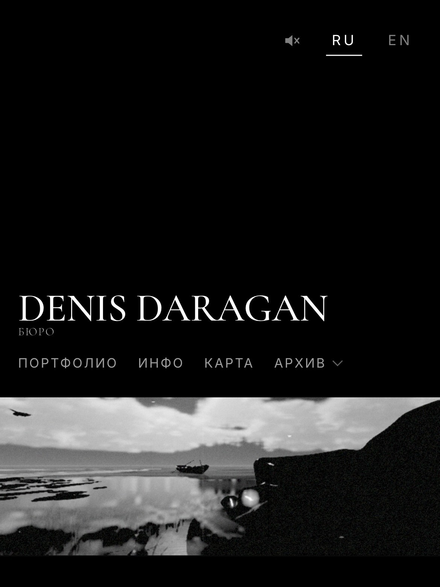
Сцена собирается из настоящих систем: солнце и небо, каскадные тени, вода с отражением и преломлением, растения экземплярами, рыбы и чайки со своим поведением, звук.
Такое обычно делают студии для игр, а в вебе останавливаются на «покрутить модельку». Здесь целый пейзаж живёт в браузере и держит кадр на телефоне.
Почему «поставить модель на сайт» и «построить сцену» — разные профессии. Из чего состоит кадр и в каком порядке он собирается.
02 · Инструмент
Самое необычное здесь — не картинка, а то, чем она сделана. В сайт встроен полноценный редактор сцены: вкладки, ползунки, гизмо, пауза. Художник крутит значения и сразу видит результат в настоящем кадре — не в предпросмотре, а в том самом мире, который увидит зритель.
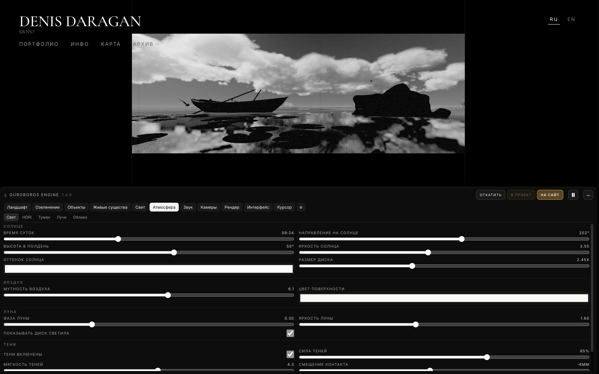
444 параметра разложены по группам: ландшафт, озеленение, объекты, живые существа, свет, атмосфера, звук, камеры, рендер. Три кнопки справа сверху — «Откатить», «В проект», «На сайт».
Обычно параметры сцены зашиты в код, и любое изменение — задача для программиста. Здесь настройки вынесены в интерфейс, а «В проект» записывает их в файл проекта. «На сайт» коммитит этот файл и отправляет в живой сайт одним нажатием.
Как сделать себе инструмент вместо того, чтобы каждый раз просить о правке. Где граница между «черновиком художника» и «тем, что видит зритель».
03 · Камеры
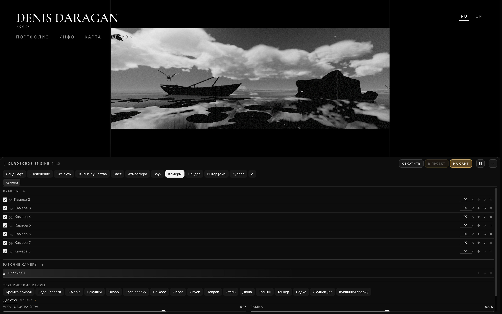
Камера хранит не только ракурс. Она хранит снимок всей сцены: свет, туман, плёнку, постобработку. Переключение камеры — это смена целого состояния мира. И у каждой камеры два формата: горизонтальный и вертикальный.
Один и тот же свет никогда не выглядит одинаково хорошо на всех планах. Привязка настроек к кадру — приём из кино и фотографии, а не из веб-разработки.
Композиция в интерактивной сцене: почему нельзя «просто поставить камеру», и как один мир держит вертикальный экран телефона и широкий монитор.
04 · Свет и тени
Самая частая беда трёхмерных сцен в вебе — тень, оторванная от предмета, или тень, которая «шумит» полосами. Здесь это решено физически: смещение контакта задаётся в миллиметрах и уже потом пересчитывается в единицы каждой карты теней.
Раньше одно и то же значение означало сантиметры возле камеры и почти метр вдали — и художник, сам того не зная, чинил одно, ломая другое.
Теперь ползунок называется «Смещение контакта» и измеряется в миллиметрах. Старые сцены переводятся автоматически и не переписываются.
Две зоны теней (ближняя 25 м и дальняя 160 м), которые подстраиваются под камеру и ландшафт. Одна карта — для слабых устройств. Вода получает те же карты, что и суша, поэтому тень не обрывается у берега.
Каскадные тени — техника из больших движков. В вебе их обычно не подключают вовсе или подключают так, что два каскада светят как два солнца. Здесь листва и дальние карточки растений считают только свою карту.
Тени: почему появляется зазор и полосатый «муар», что такое каскады и как выбрать дальность. Плюс шесть готовых HDRI на все времена суток.
05 · Постобработка
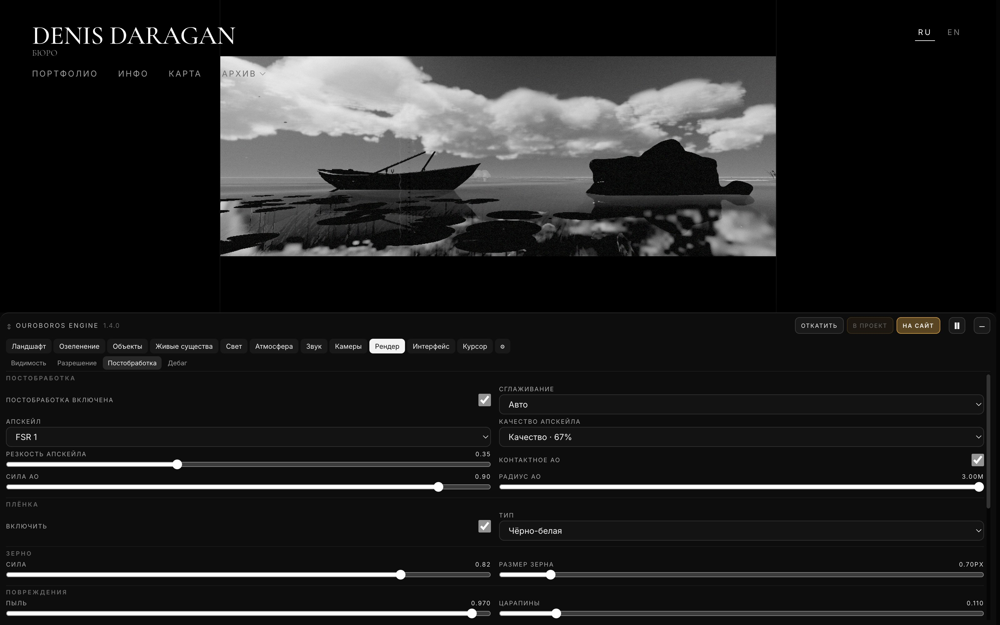
Сцена может рисоваться в меньшем разрешении, а до размера экрана её доводит FSR 1 — алгоритм AMD, перенесённый сюда на WebGL2. Порядок проходов строгий: цвет и плёнка считаются один раз и в правильном месте, иначе зерно «поплывёт» вместе с апскейлом.
FSR в браузере почти никто не делает. Сглаживание тоже не угадывается: движок пробует MSAA по-настоящему и, если оборудование его не тянет, переходит на FXAA — а не решает по названию устройства.
Постобработка по порядку: тонирование, сглаживание, апскейл, зерно. Чем «красивая картинка» отличается от «дорогой картинки» и где можно сэкономить незаметно.
06 · Лаборатория
Ни один объект не попадает в сцену сразу. Сначала он живёт в лаборатории: один и тот же тёплый белый фон, один и тот же студийный свет, физический масштаб в метрах и линейка внизу кадра. Тринадцать коллекций — от рыб до облаков — говорят на одном визуальном языке.
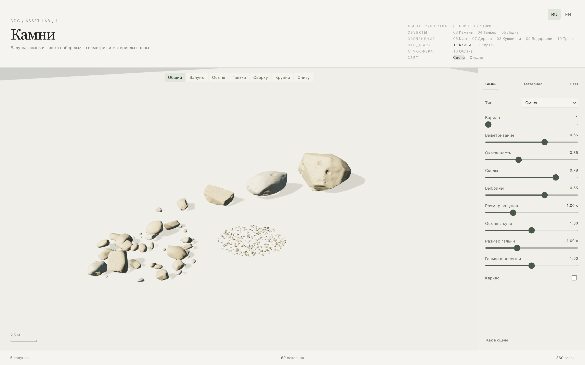
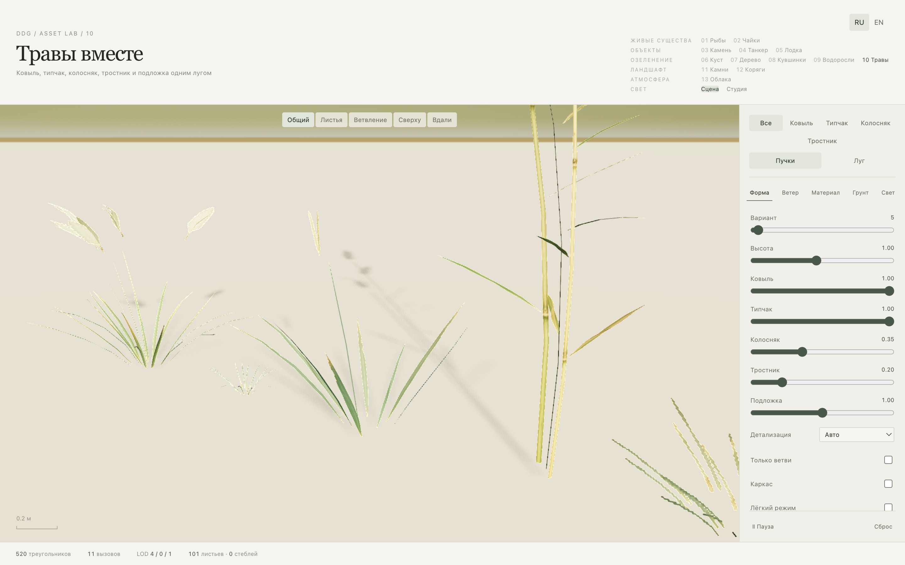
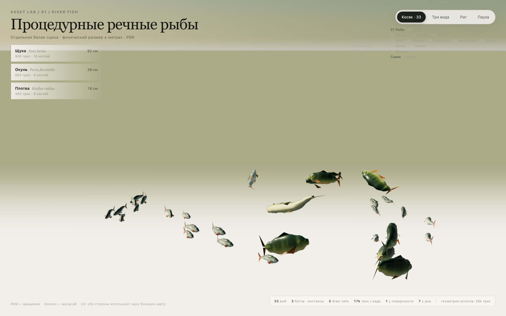
Лаборатория показывает не копии, а те же самые модули, что работают на сайте, и читает опубликованные настройки сцены. Поэтому «в лаборатории было красиво, а в сцене развалилось» здесь невозможно.
Обычно у каждого ассета своя тестовая страница со своим светом — и сравнить два объекта нельзя. Один белый фон на всё — это дисциплина, которую держат единицы.
Как устроить себе честную студию: нейтральный свет, масштаб в метрах, счётчики треугольников и вызовов отрисовки прямо в кадре.
07 · Растительность
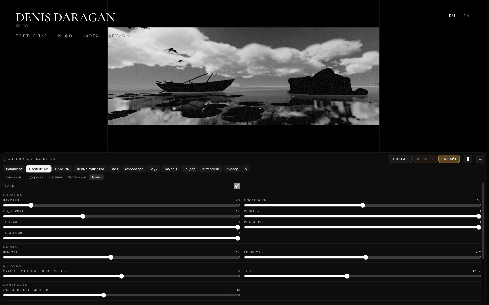
Трава и деревья рисуются экземплярами, а вдали заменяются плоскими карточками. Чтобы карточка не отличалась по яркости от настоящего куста, движок один раз замеряет её пиксели на видеокарте и подгоняет — и делает это очередью, не больше двух шагов за кадр.
Обычно карточку подгоняют на глаз, и растения вдали выдают себя другим тоном. Здесь измерение вместо мнения — и запуск сцены не спотыкается, потому что вся эта работа размазана по кадрам.
Инстансинг и уровни детализации простыми словами. Ветер как формула, а не как анимация. Как сделать свои текстуры трав и запечь их в атлас.
08 · Вода
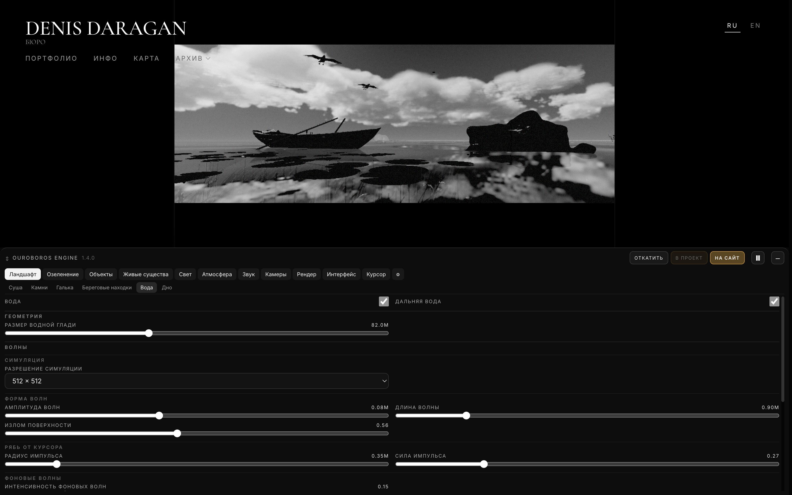
Вода — это одновременно симуляция ряби на сетке 512 × 512, отражение сцены зеркальной камерой, преломление дна и волны по форме. Палец или курсор бросает импульс в симуляцию, и круги расходятся по-настоящему.
Вода в вебе почти всегда — движущаяся текстура. Здесь настоящие проходы отражения и преломления, у которых есть цена в миллисекундах, и именно их первым делом придерживает автобюджет.
Самая дорогая поверхность кадра: из чего складывается её стоимость, что можно считать реже, а что — нельзя, и почему у берега нужна отдельная забота.
09 · Небо
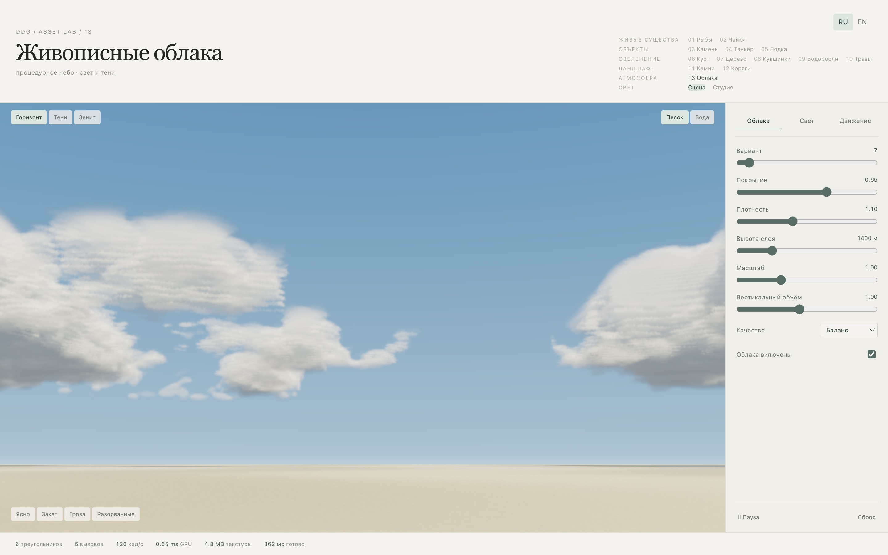
Облаков как геометрии нет вовсе: они целиком считаются шейдером на нескольких треугольниках. При этом они дают тень на землю и воду, попадают в отражение и участвуют в лучах света.
Объёмные облака — классический способ «уронить» браузер. Здесь у них есть три режима стоимости и честный счётчик, который видно на экране.
Что такое шейдер, если объяснять художнику. Как нарисовать объём там, где нет объёма, и сколько это стоит в миллисекундах.
10 · Устойчивость
Главный вопрос любого заказчика — «а на моём телефоне не будет тормозить?». Здесь на него отвечает не обещание, а механизм: движок замеряет собственное время кадра и, если стало тяжело, снижает частоту служебных проходов — отражения, преломления, разрешение постобработки.
Обычно «оптимизация под мобильные» — это заранее выключить половину сцены для всех телефонов сразу. Здесь качество снимается по факту нагрузки и возвращается, когда становится легче.
Бюджет кадра: сколько миллисекунд у вас есть и куда они уходят. Как замерить, а не угадать. Что можно снижать незаметно для зрителя, а что — нельзя никогда.
11 · Метод
Денис — художник, а не программист. Код здесь пишут агенты. Но результат не похож на обычный «наговорил — сгенерировалось», и вот почему.
У проекта есть свод: кто за что отвечает, какие порты чьи, как передаётся сцена, чего нельзя трогать руками. Агент читает его прежде, чем начать. Поэтому результат воспроизводим, а не зависит от удачи в диалоге.
Файл авторских настроек нельзя править руками, даже агенту. Он меняется только через кнопку «В проект». Художественный контроль физически не может уйти из рук художника.
Двадцать пять программ-проверок и полсотни скриптов считают тени, камеры, воду и травы настоящими числами. Скриншот показывает, что «выглядит нормально»; проверка показывает, что правильно.
В отчётах записано и то, что не проверено: физические айфоны, Windows, нагрев. Честный список ограничений — редкое качество и в студиях, и в одиночной работе.
Сайт, редактор и лаборатория выглядят как одна работа: тот же шрифт, та же типографика, те же интервалы. Инструмент не выглядит «технической страницей».
Каждое техническое решение здесь принято ради кадра: плёнка, силуэт, тишина на горизонте, один танкер вдали. Технологии нет там, где она не работает на изображение.
12 · Программа
Всё, что перечислено выше, уже сделано и работает — значит, об этом есть что показать. Ниже — набросок программы: слева тема, справа то, что зритель получает. Каждый модуль можно снять и как короткий разбор для канала, и как занятие на два часа.
13 · Форматы
Один приём — один ролик на 5–10 минут. «Почему тень оторвана от предмета», «Облака за шесть треугольников», «Что такое бюджет кадра». Материал уже снят: редактор, лаборатория, счётчики на экране.
Последовательность из раздела 12: от света к бюджету кадра. Каждый модуль — своя коллекция в лаборатории и своя вкладка редактора, то есть уже готовый учебный стенд.
Разбор чужой сцены: почему тормозит, почему выглядит дёшево, что убрать. Здесь ценность в опыте, который не гуглится, — в списке того, чего делать не надо.